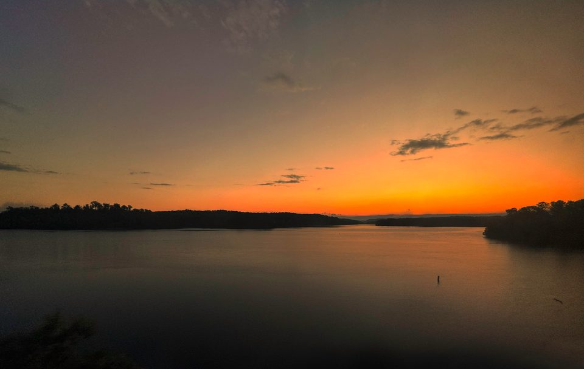

Candidate statements
Scott’s VOTE411 questionnaire is the source for his public-finance background, the four priorities, the campaign phone number, and “Our City. Our Council.” Those are his own statements, as he gave them to the League of Women Voters.
Campaign Facebook page, banner and portrait
The campaign’s Facebook page, Scott Allison for Clemson City Council, is linked from VOTE411. It describes Scott as a 1986 Clemson graduate, and the portrait on this site is its public profile photo. The sign at the top of the home page (the blue C around a sunset, “Our City, Our Council, Vote Scott Allison”) is the campaign’s own banner, supplied by the campaign; the site’s small mark and icon are cut from it. Who owns the portrait, and permission to use it here, still need to be confirmed with the campaign before launch.
Election dates and seats
Pickens County Board of Voter Registration & Elections: the election notice, early voting schedule, polling hours, and official links.
City of Clemson election notice: the November 3, 2026 nonpartisan election and the three council seats.
City of Clemson City Council: at-large seats and four-year terms.
Voting requirements
South Carolina Election Commission photo ID guidance: which IDs count, and how the reasonable impediment affidavit works. Go by the official guidance for your own situation.
Proposed color direction
The orange (#F56600), Regalia purple (#522D80), and deep purple (#2E1A47) come from Clemson University’s published palette, as a starting point that feels local, and they sit close to the orange and purple of the campaign’s banner. No University logos, Tiger Paw, or City seal appear anywhere, and nothing here implies an endorsement.
Lake Hartwell photo
Lake Hartwell in Clemson, South Carolina, photographed by Harrison Keely, June 7, 2024, CC BY 4.0. On the home page it runs full width behind the line “Our City. Our Council.”: cropped, converted from its embedded color profile to standard web color with the midtones brightened a little, and darkened toward the bottom so the words stay readable. Nothing here implies an endorsement by the photographer.


Fonts and design
Barlow Condensed and Manrope are used under the SIL Open Font License; the license files ship with the fonts. The wordmark, layout, icons, and other graphics were drawn for this site and are still drafts.